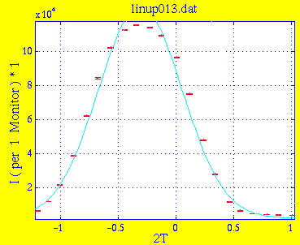
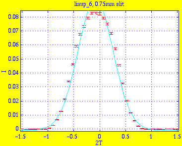
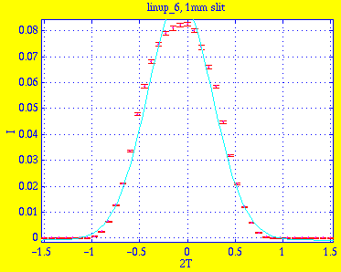
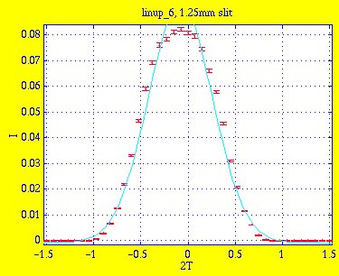
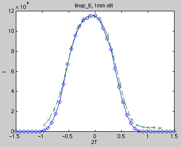

Amplitude 1.2513e+05 3.9318e+03 Centre -3.0967e-01 9.7474e-03 Width 3.6144e-01 9.6441e-03 Background 1.9231e+03 9.0375e+02 * Chi Squared 642.5405
This is the result linup_6_m.sim of simulation with 5e6 neutrons on 0.75mm slit:

Amplitude 9.2965e-02 2.4094e-03 Centre -7.9373e-02 6.5442e-03 Width 3.4118e-01 5.5655e-03 Background -7.7537e-04 3.3417e-04 * Chi Squared 72.7182
This is the result linup_6_0.sim of simulation with 5e6 neutrons on 1mm slit:

Amplitude 9.2756e-02 2.4560e-03 Centre -7.9388e-02 6.7187e-03 Width 3.4129e-01 5.7245e-03 Background -7.8760e-04 3.4379e-04 * Chi Squared 75.9689
This is the result linup_6_p.sim of simulation with 5e6 neutrons on 1.25mm slit:

Amplitude 9.2577e-02 2.4323e-03 Centre -8.0689e-02 6.6481e-03 Width 3.4157e-01 5.6603e-03 Background -7.7901e-04 3.4032e-04 * Chi Squared 74.6170
The measured and simulated widths are in good agreement, though the fits are not very good. This is a comparison of measured and simulated (with 1mm slit) data:
